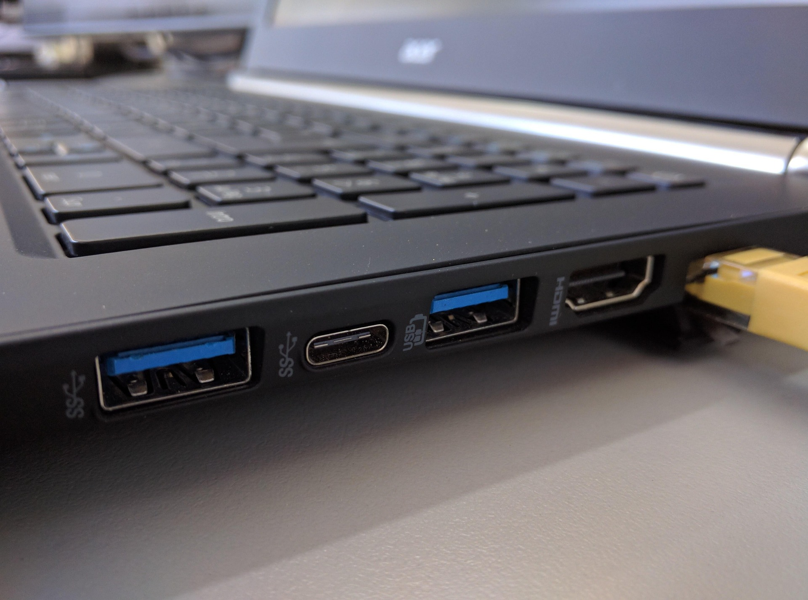
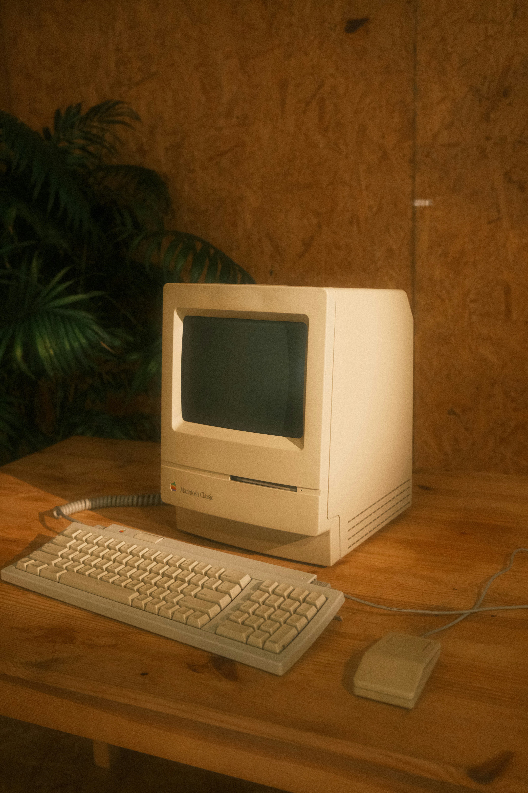
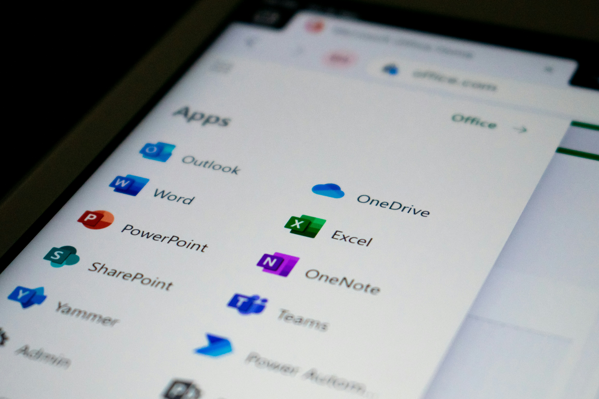

WLAN verbessern
Schwache Funkabdeckung, Abbrüche und langsames Internet werden systematisch geprüft, damit Streaming, Homeoffice und Alltag stabil laufen.
IT Service aus Roßbach für Rottal-Inn und Niederbayern
Persönliche Computerhilfe für WLAN, PC, Laptop, Drucker, Netzwerk, Backup, E-Mail und Fernwartung. Klar erklärt, sauber gelöst und ohne unnötige Kosten.
Antwort meist innerhalb weniger Stunden.

Leistungen
Jede Lösung beginnt mit einer klaren Einschätzung: Was ist kaputt, was ist sinnvoll, was lohnt sich nicht? So bleibt der Aufwand transparent.
Schwache Funkabdeckung, Abbrüche und langsames Internet werden systematisch geprüft, damit Streaming, Homeoffice und Alltag stabil laufen.

Router werden sauber eingerichtet, abgesichert und verständlich erklärt. Sie wissen danach, was wichtig ist und wo Sie nichts anfassen müssen.

Mesh-Systeme sorgen für bessere Abdeckung in Haus, Wohnung, Büro oder Ferienwohnung, ohne komplizierte Technik im Alltag.

Geräte, Freigaben und Verbindungen werden geordnet, damit PC, Drucker, NAS, Smart-TV und Arbeitsplätze zuverlässig zusammenarbeiten.
Kabelverbindungen werden geprüft und sinnvoll geplant, wenn WLAN nicht reicht oder stabile Geschwindigkeit wichtig ist.
Ich grenze ein, ob Router, WLAN, Gerät, Anbieter oder Verkabelung die Ursache ist. Das spart Zeit und unnötige Neuanschaffungen.
Fehler werden verständlich analysiert und behoben, damit Ihr Computer wieder zuverlässig für Arbeit, Verein, Familie oder Alltag nutzbar ist.
Laptops werden eingerichtet, bereinigt, aktualisiert und geprüft, damit mobiles Arbeiten ohne ständige Störungen funktioniert.
Updates, Fehlermeldungen, Treiber und Systemeinstellungen werden sauber gelöst, ohne unnötige Neuinstallation, wenn sie vermeidbar ist.

Autostart, Speicher, Updates, Programme und Datenträger werden geprüft. Sie bekommen eine ehrliche Einschätzung, ob Optimierung oder Austausch sinnvoll ist.

Drucker werden installiert, verbunden und getestet, damit Drucken vom PC, Laptop oder Smartphone wieder verlässlich klappt.
Scan-Software, Treiber und Speicherorte werden eingerichtet, damit Dokumente schnell dort landen, wo Sie sie brauchen.

Ein passendes Backup-Konzept schützt Fotos, Dokumente und Geschäftsdaten vor Verlust durch Defekt, Bedienfehler oder Schadsoftware.

Wichtige Daten werden strukturiert gesichert und wieder auffindbar gemacht, damit Sie im Ernstfall nicht bei null anfangen.

Neue Geräte werden alltagstauglich vorbereitet: Windows, Updates, Programme, Sicherheit, Drucker, E-Mail und sinnvolle Grundeinstellungen.
Dokumente, Bilder, Desktop, Browserdaten und E-Mail-Daten werden geordnet auf neue Geräte übertragen, soweit technisch möglich.

Konten, Office-Apps, OneDrive und Outlook werden so eingerichtet, dass Arbeit, Schule, Verein oder Betrieb reibungsloser laufen.

Postfächer, Programme, Smartphone-Synchronisierung und Fehler bei Versand oder Empfang werden verständlich eingerichtet und geprüft.

Viele Probleme lassen sich schnell online lösen. Das spart Anfahrt, wenn es um Software, Einstellungen, E-Mail oder Windows geht.
Wenn das Problem nicht eindeutig ist, sortiere ich die Ursache und empfehle den nächsten sinnvollen Schritt, ehrlich und nachvollziehbar.
Warum ich
Gerade bei IT-Problemen zählt nicht nur die technische Lösung. Entscheidend ist, dass Sie verstehen, was passiert und welche Kosten sinnvoll sind.
Ich empfehle nur, was zum Problem passt. Reparatur, Optimierung oder Neukauf werden nüchtern abgewogen.
Vor Beginn wird besprochen, welcher Aufwand realistisch ist. Keine versteckten Kosten, keine überraschenden Zusatzpakete.
Ich erkläre IT ohne Fachchinesisch, besonders für Senioren, Familien und Menschen, die einfach zuverlässig arbeiten möchten.
Persönliche Betreuung aus Roßbach, vor Ort im Umkreis oder per Fernwartung, wenn es schneller und sinnvoller ist.
Ablauf
Sie melden sich per Telefon, WhatsApp oder E-Mail und beschreiben kurz das Problem.
Ich schätze ein, was wahrscheinlich nötig ist und ob Fernwartung oder ein Termin vor Ort sinnvoller ist.
Das Problem wird transparent behoben. Sie bekommen eine verständliche Erklärung und klare nächste Schritte.
Preise
Kosten werden vorher besprochen. Keine versteckten Kosten.
Ersteinschätzung
Kurze Einschätzung per Telefon, WhatsApp oder E-Mail, damit Sie wissen, ob ich helfen kann.
Vor-Ort-Hilfe
Für WLAN, Drucker, PC, Netzwerk und neue Geräte. Der voraussichtliche Aufwand wird vorher klar besprochen.
Fernwartung
Schnelle Hilfe bei Software, Windows, E-Mail, Microsoft 365 und Einstellungen, sofern technisch möglich.
Gemäß §19 UStG wird keine Umsatzsteuer ausgewiesen.
Einsatzgebiet
Vor-Ort-Termine sind im regionalen Umkreis möglich. Viele Themen lassen sich zusätzlich per Fernwartung lösen.
FAQ
Ich helfe bei WLAN, Router, Mesh, Netzwerk, LAN, Internetproblemen, PC Hilfe, Laptop Hilfe, Windows Problemen, langsamen Computern, Drucker, Scanner, Backup, Datensicherung, neuen PCs, Datenübernahme, Microsoft 365, E-Mail und Fernwartung.
Der IT Service richtet sich an Privatkunden, Senioren, Familien, Homeoffice-Nutzer, kleine Unternehmen, Handwerksbetriebe, Ferienwohnungen und Vereine in Roßbach, Rottal-Inn und Niederbayern.
Ja. Die erste Einschätzung per Telefon oder Nachricht ist kostenlos und unverbindlich. Danach entscheiden Sie in Ruhe, ob ein Termin sinnvoll ist.
Ja. Seniorenhilfe am Computer gehört ausdrücklich dazu. Ich erkläre ruhig, verständlich und ohne Fachbegriffe, damit Internet, E-Mail, Drucker und PC sicher genutzt werden können.
Beides ist möglich. Fernwartung eignet sich für Software, E-Mail, Windows und Einstellungen. Vor Ort ist sinnvoll bei WLAN, Router, Drucker, Netzwerk, neuer Hardware oder unklaren Fehlern.
Eine Rückmeldung erfolgt meist innerhalb weniger Stunden. Bei dringenden Problemen ist ein Anruf oder eine WhatsApp-Nachricht am schnellsten.
Die Kosten richten sich nach Aufwand und Art der Hilfe. Vor Beginn werden die Kosten klar besprochen. Es gibt keine versteckten Kosten.
Ja. Ich richte neue PCs und Laptops ein, installiere Updates, übernehme Daten, binde Drucker und E-Mail ein und bereite das Gerät alltagstauglich vor.
Ja. Ich prüfe Router, WLAN-Abdeckung, Mesh-Systeme, Störquellen und Geräteeinstellungen, damit das Internet in Haus, Wohnung, Büro oder Ferienwohnung stabiler läuft.
Ja. Ich helfe bei Installation, Netzwerkdruckern, Treibern, Scanner-Funktionen und Verbindungsproblemen mit Windows, Laptop oder Smartphone.
Kontakt
Antwort meist innerhalb weniger Stunden. Für schnelle Rückfragen sind Telefon oder WhatsApp am besten.
Rechtliches
Andreas Göttl IT Service
Inhaber: Andreas Göttl
Einzelunternehmen
Oberbubach 1a
94439 Roßbach, Ortsteil Thanndorf
Deutschland
Telefon: +49 15563 242815
E-Mail: kontakt@andreas-goettl.de
Gemäß §19 UStG wird keine Umsatzsteuer ausgewiesen.
Andreas Göttl, Oberbubach 1a, 94439 Roßbach, Deutschland.
Die Europäische Kommission stellt eine Plattform zur Online-Streitbeilegung bereit. Ich bin nicht verpflichtet und nicht bereit, an Streitbeilegungsverfahren vor einer Verbraucherschlichtungsstelle teilzunehmen.
Datenschutz
Verantwortlich für die Datenverarbeitung auf dieser Website ist Andreas Göttl, Andreas Göttl IT Service, Oberbubach 1a, 94439 Roßbach, Deutschland, E-Mail: kontakt@andreas-goettl.de.
Diese Website dient der Information über IT-Dienstleistungen und der Kontaktaufnahme. Personenbezogene Daten werden nur verarbeitet, soweit dies zur Bereitstellung der Website, zur Bearbeitung von Anfragen oder zur Erfüllung rechtlicher Pflichten erforderlich ist.
Beim Aufruf der Website können durch den Hostinganbieter technisch notwendige Zugriffsdaten verarbeitet werden, etwa IP-Adresse, Datum und Uhrzeit des Zugriffs, aufgerufene Datei, Browsertyp, Betriebssystem und Referrer. Die Verarbeitung erfolgt auf Grundlage von Art. 6 Abs. 1 lit. f DSGVO, um die Website sicher und zuverlässig bereitzustellen.
Wenn Sie per Telefon, WhatsApp oder E-Mail Kontakt aufnehmen, werden die von Ihnen übermittelten Angaben zur Bearbeitung der Anfrage verarbeitet. Rechtsgrundlage ist Art. 6 Abs. 1 lit. b DSGVO, sofern die Anfrage mit einer Leistung zusammenhängt, ansonsten Art. 6 Abs. 1 lit. f DSGVO.
Bei Nutzung des WhatsApp-Links gelten zusätzlich die Datenschutzbedingungen des jeweiligen Anbieters. Nutzen Sie alternativ Telefon oder E-Mail, wenn Sie WhatsApp nicht verwenden möchten.
Diese Website verwendet kein Analyse-Tracking und lädt keine externen Schriftarten. Die Theme-Auswahl für Hell- oder Dunkelmodus wird ausschließlich lokal im Browser über localStorage gespeichert und nicht an mich übertragen.
Personenbezogene Daten werden nur so lange gespeichert, wie es für die Bearbeitung der Anfrage, die Vertragsabwicklung oder gesetzliche Aufbewahrungspflichten erforderlich ist.
Sie haben nach Maßgabe der DSGVO das Recht auf Auskunft, Berichtigung, Löschung, Einschränkung der Verarbeitung, Datenübertragbarkeit und Widerspruch. Außerdem besteht ein Beschwerderecht bei einer zuständigen Datenschutzaufsichtsbehörde.
Ich treffe angemessene technische und organisatorische Maßnahmen, um personenbezogene Daten vor Verlust, Missbrauch und unberechtigtem Zugriff zu schützen.
Diese Datenschutzerklärung kann angepasst werden, wenn sich technische oder rechtliche Anforderungen ändern.